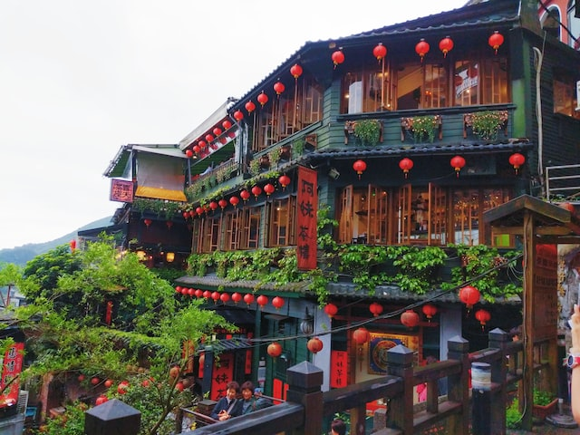

Jiufen(Taiwan)
Jiufen, Taiwan is a small mountain town that has gained international fame for its connection to the beloved Japanese animated film, Spirited Away. Director Hayao Miyazaki visited Jiufen during the creation of Spirited Away and drew inspiration from the town’s winding streets, vibrant night markets, and atmospheric tea houses. The film’s fictional setting of the magical bathhouse, where the protagonist Chihiro works and embarks on her journey, is also said to have been inspired by the town’s historic teahouses and winding alleyways. Jiufen and Spirited Away have a strong relationship, as the town has become a pilgrimage site for fans of the film. Visitors to Jiufen can explore the town’s narrow alleys, which are lined with traditional red lanterns and are reminiscent of the film’s bathhouse setting. They can also visit A-Mei Teahouse, which is said to have served as the inspiration for Spirited Away’s bathhouse. The teahouse has become a popular tourist destination, with visitors flocking to see its intricate wood carvings, antique furniture, and sweeping views of the town and the sea. The town has embraced its connection to the film and has even hosted Spirited Away-themed events, such as outdoor film screenings and cosplay contests. Fans of the film can purchase Spirited Away souvenirs, such as plush toys, t-shirts, and other merchandise, in the town’s many souvenir shops. In addition to its association with Spirited Away, Jiufen is also known for its rich history, beautiful temples, and stunning natural scenery. Visitors can explore the town’s narrow streets, which are filled with charming shops and restaurants, and enjoy panoramic views of the surrounding mountains and sea. Jiufen is a unique destination that blends history, culture, and fantasy, and it continues to captivate visitors from around the world with its enchanting atmosphere and magical charm.
Yakushima(Japan)

Yakushima is a small island located off the southern coast of Japan, known for its dense forests, rugged terrain, and diverse wildlife. The island was the inspiration for the setting of the acclaimed Japanese animated film, Princess Mononoke, directed by Hayao Miyazaki. Princess Mononoke is a tale of conflict between humans and nature, set in a fictionalized version of medieval Japan. The film’s protagonist, Ashitaka, travels to the forest in search of a cure for a deadly curse and becomes embroiled in a conflict between the forest gods and the humans who seek to exploit the land for their own gain. Yakushima’s lush forests and rugged landscapes were a major influence on Miyazaki’s vision for the film’s setting. The island’s ancient cedar forests, which are home to centuries-old trees and diverse wildlife, are reminiscent of the film’s mystical forests and the powerful forest gods that inhabit them. The island’s natural beauty and unique ecosystem have also made it a popular destination for tourists and nature lovers from around the world. Visitors to Yakushima can explore the island’s dense forests and hiking trails, which offer breathtaking views of the island’s rugged coastline and surrounding sea. They can also visit the island’s Yakusugi Museum, which showcases the island’s ancient cedar trees and the island’s unique ecology. The museum features exhibits on the history and culture of the island, as well as the island’s important role in the production of Princess Mononoke. In addition to its association with Princess Mononoke, Yakushima is also known for its natural beauty, unique culture, and stunning landscapes. The island’s deep connection to nature and its powerful forest gods make it a truly magical destination, and it continues to captivate visitors from around the world with its enchanting atmosphere and mystical charm.
dubrovnik(Croatia)

Dubrovnik, Croatia is a picturesque coastal town that has gained international recognition for its connection to the Japanese animated film, Porco Rosso. Directed by Hayao Miyazaki, the film tells the story of a skilled fighter pilot who transforms into a pig and becomes a bounty hunter, defending the Adriatic Sea against air pirates. Dubrovnik’s old town, which is known for its well-preserved medieval architecture, served as a major inspiration for the film’s fictional setting. The town’s narrow streets, red-tiled roofs, and stunning coastal views are reminiscent of the film’s scenic seaside town of Porto Vecchio, where much of the action takes place. Visitors to Dubrovnik can explore the town’s well-preserved medieval walls, which offer panoramic views of the town and the sea. They can also visit the nearby island of Lokrum, which served as a major filming location for the movie. The island’s lush vegetation and rocky coastline were used to create the film’s stunning aerial scenes and dramatic dogfights. In addition to its association with Porco Rosso, Dubrovnik is also known for its rich history, vibrant culture, and stunning natural beauty. The town’s well-preserved medieval architecture and stunning coastal views make it a popular destination for tourists from around the world. Visitors can enjoy a range of activities, from exploring the town’s historic landmarks and museums to relaxing on the town’s many beaches and enjoying its vibrant nightlife. Dubrovnik’s connection to Porco Rosso has helped to raise the town’s profile and attract new visitors to the area. The town’s stunning architecture and coastal scenery have inspired many artists and filmmakers over the years, and its association with one of Miyazaki’s most beloved films has helped to solidify its place as a cultural and artistic hub.